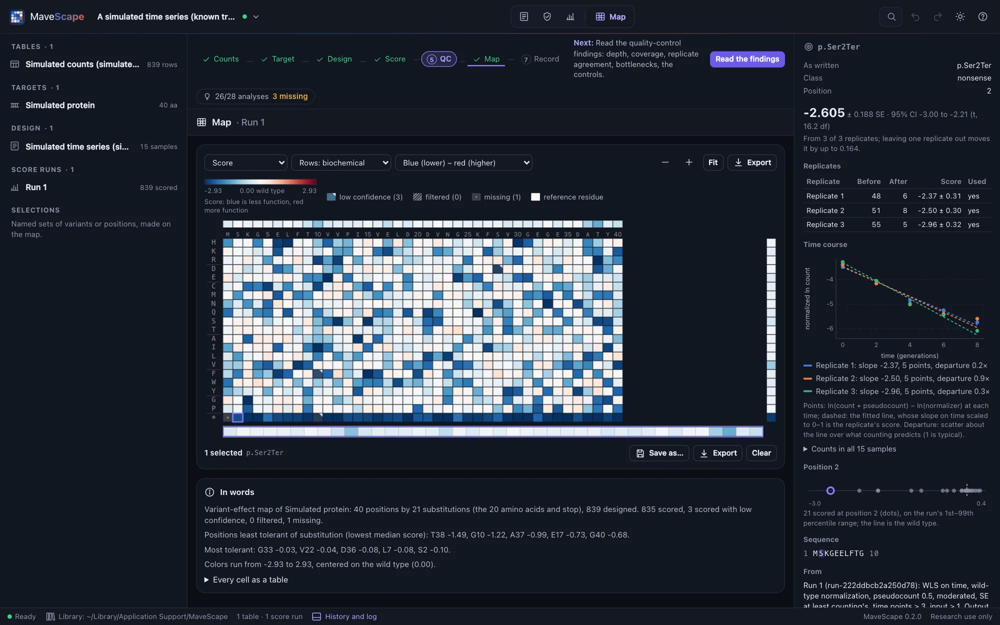
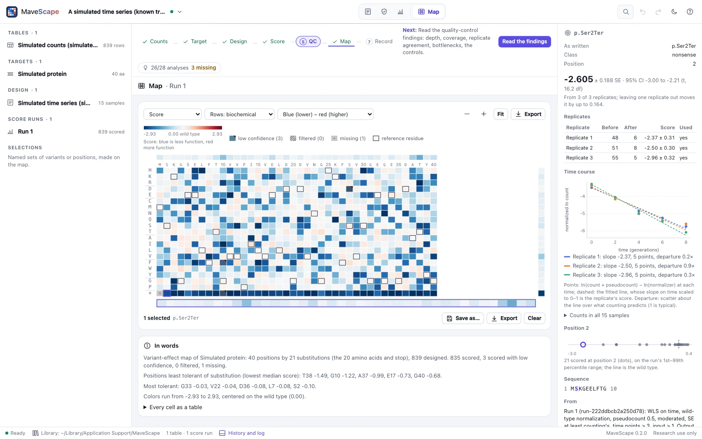
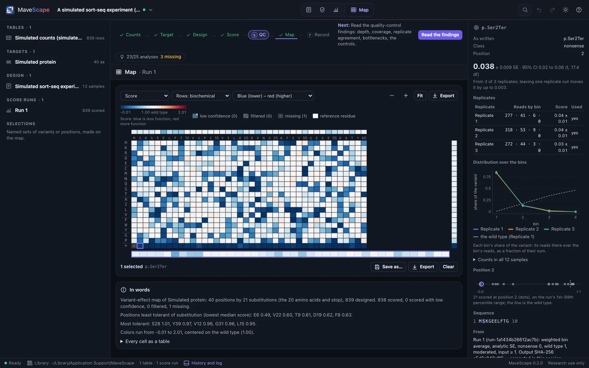
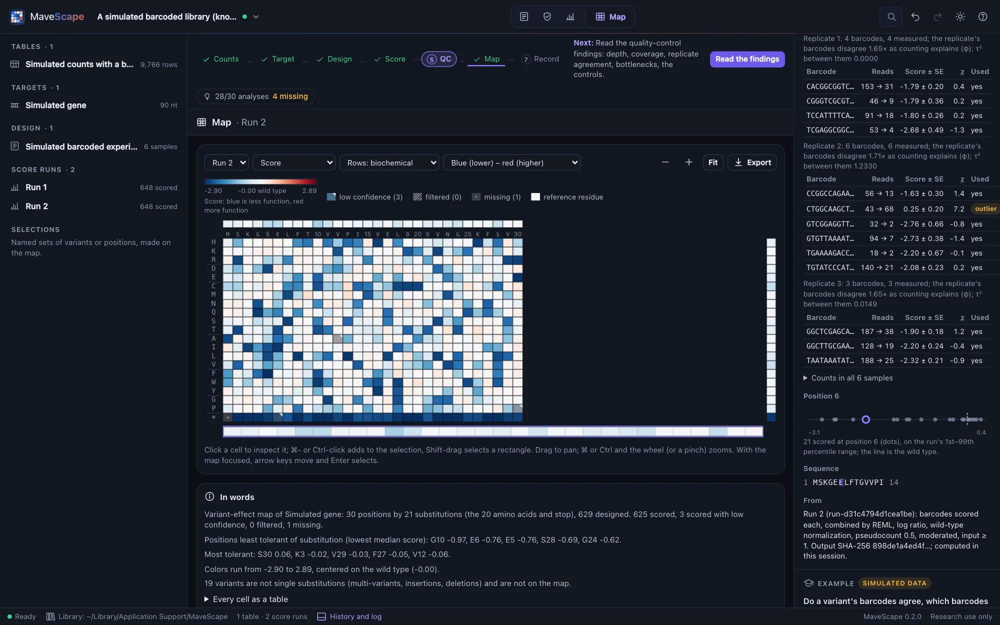
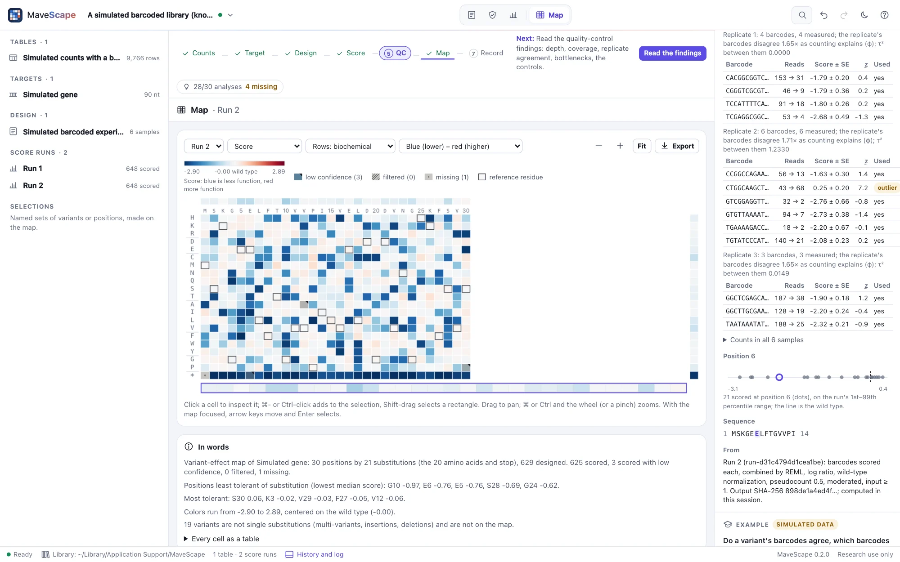
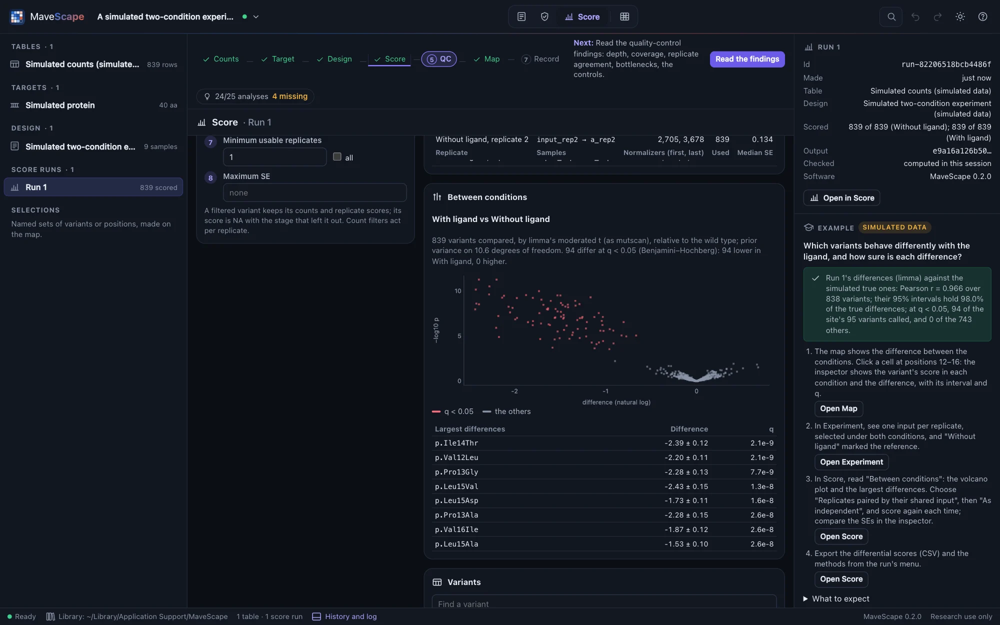
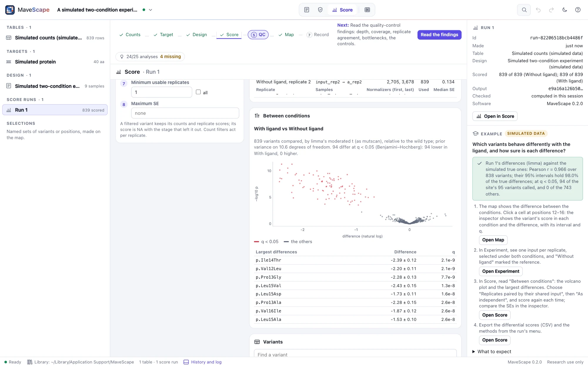
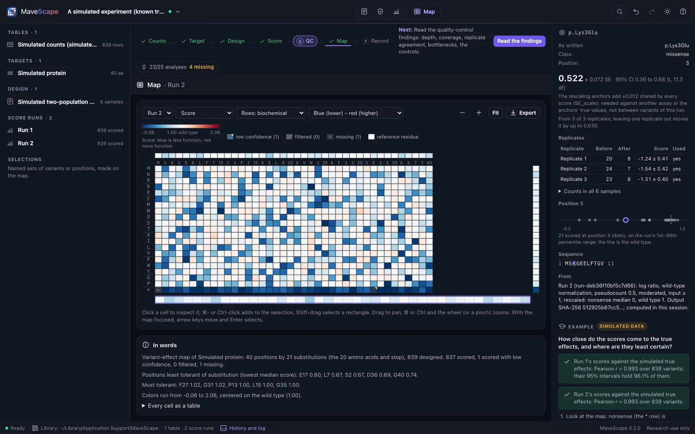
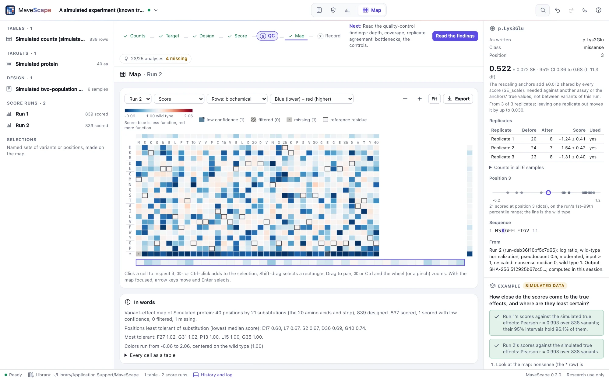

Scoring
Scoring turns the counts into a functional score with a standard error for every variant, in a run that keeps everything needed to repeat it. The parameters and the filters are in plain view in the Score view.
Scores
A variant's score in one replicate is the natural logarithm of its frequency after selection over its frequency before, normalized so that the reference scores 0, with a pseudocount (0.5) added to every count and a standard error from the counts, as Enrich2 computes them. Normalizations:
- Wild type (the default when the table counts it): scores relative to the wild type, which scores 0.
- Complete cases: relative to the variants counted in every sample.
- All reads of each sample.
- Synonymous median: relative to the median synonymous variant.
Optional rescaling anchors the scale: nonsense median 0 and wild type 1, or synonymous median 0 and nonsense median −1.
Time series
A time series (the same library sampled at three or more times) is scored by default from every time point: each variant's score is the slope of its normalized log count against time scaled to 0–1, fitted by weighted least squares, each point weighted by its counting precision, as Enrich2 computes it. Ordinary least squares and the log ratio of the first and last samples are the other choices under Scored by. Times need not be evenly spaced.


- Missing points. A variant is fitted on the time points where it was counted: its first is required, and by default at least three in all. A fit on fewer points than the replicate has is flagged low confidence. The Enrich2-compatible preset requires every time point, as Enrich2 does.
- The standard error. Enrich2 scales the slope's standard error by the residuals alone, so three points that happen to fall on a line get an SE near 0 and dominate the combination of replicates. MaveScape's default scales by the residuals but never goes below what counting alone predicts. On a simulated time series with known effects, combined by REML, the 95% intervals then hold the true slope 90% of the time against 81% with Enrich2's SE; combined by the moderated combination (the default), which learns the noise between replicates from every variant, 93%.
- Per generation. Enrich2's slope is on time scaled to 0–1: the change over the whole time course, which depends on how long the experiment ran. A score is the change per unit of time instead gives the slope on time itself, per generation when the times are in generations: a selection coefficient, comparable between experiments of different lengths. For the log ratio of the first and last samples, it is the ratio over the time between them. The whole time course stays the default, so scores agree with Enrich2's; with the times in another unit (rounds, hours), a score is per that unit.
- Departure from a line. Each fit reports how far its points scatter about the line, against counting noise. A time course that is not a line (a variant that rises and then falls) is scored and reported, never removed; quality control summarizes the departures.
The inspector draws a variant's time course in each replicate. Quality control reads the time points used and the fit of the time courses.
Sorted bins
When cells are sorted by a reporter (abundance, binding, expression) into ordered bins and each bin is sequenced, a variant's score comes from its distribution over the bins:
- The weighted average of the bins' values (the default, VAMP-seq's): each bin's value, a rank such as 0.25, 0.5, 0.75, 1 or a fluorescence, weighted by the variant's frequency in the bin (its reads there over the bin's reads). Its SE comes from counting by the delta method, or from a seeded bootstrap of the counts; the two agree.
- Maximum likelihood, when the design records each bin's gates: the variant's cells are taken to have log-normally distributed fluorescence, seen only as counts between the gates (Peterman and Levine 2016), and the score is the fitted mean μ of the log fluorescence. The spread σ is the wild type's, shared by every variant, or each variant's own (which needs reads in three bins). With the cells sorted into each bin recorded, reads are reweighted by them, and the information is limited by the smaller of a variant's reads and its cells.

Each replicate's scores are then scaled: by default so that its median nonsense variant scores 0 and the wild type 1 (VAMP-seq); or so that the median of its lowest 5% scores 0 (MultiSTEP, for libraries without nonsense variants); or not at all. The VAMP-seq preset also leaves out variants whose summed bin frequency is below 10−4.75, keeps variants seen in two or more replicates, and combines replicates by their mean with SE their SD over √k.
On factor IX (MaveDB urn:mavedb:00001200-a-1), MaveScape reproduces every published replicate score from the counts, to 10−15, and the combined scores exactly. On a simulated sort, its maximum-likelihood fits equal fitdistrplus's fitdistcens to 3 × 10−7, and track the true shifts more closely than the weighted average.
Barcodes
A table of barcodes (Opening your data) is scored in either of two ways, chosen under Barcodes:
- Sum, then score (the default): each variant's barcodes are summed in each sample, and the variant is scored from the sums, as Enrich2 scores a barcoded library and dms_variants'
func_scoresby substitution. - Score each barcode, then combine: each barcode is scored on its own against its replicate's normalizers, which come from the summed counts (the wild type's barcodes summed), as dms_variants'
func_scoresby barcode; a variant's barcodes are then combined within the replicate by REML random effects, fixed effects or their mean. With REML, how much the barcodes disagree beyond counting goes into the variant's SE.
Either way every barcode is scored and compared with its variant's other barcodes: its departure is its difference from their inverse-variance mean, in units of their counting error together, over √φ, where φ is how much more a replicate's barcodes disagree than counting explains (the median squared departure over its value under counting alone). A barcode departing by more than 4 is an outlier, found one at a time so that one outlier does not make its siblings look off; variants need three barcodes for this. The barcode filter leaves outliers out of the sums or the combination, and a minimum number of barcodes per variant can be required. The inspector lists a variant's barcodes in each replicate, with their counts, scores and departures.


On a simulated barcoded library with a map in conflict for 1.5% of its barcodes, MaveScape scores every barcode, and every variant from its summed barcodes, equal to dms_variants 1.6.0's func_scores by barcode and by substitution to 5 × 10−13, whether the counts come with MaveScape's map, in dms_variants' own variant_counts layout, or in Enrich2's layout. Against the library's true effects, the barcodes scored and combined by REML track them more closely (r = 0.990) than the sums (0.977), and their 95% intervals hold the true effect 94% of the time.
DiMSum's error model
For an input and an output, Scored by offers DiMSum's fitness and error model (Faure et al., Genome Biology 2020), computed as DiMSum 1.4 computes them, for the replicates of each condition and tile together:
- Fitness is the log ratio of a variant's output and input counts less the wild type's, with no pseudocount: a variant with a zero count in a replicate is not scored there. A dropout pseudocount raises an output of 0 whose input is above 0, for variants that drop out of the selection entirely.
- Each replicate is scaled and shifted to agree with the others, on the variants counted in every sample with enough input reads to span the full range of fitness (DiMSum's threshold, from the 1st percentile of the log ratios), and the wild type then scores 0.
- The error model gives each variant's variance as ar(min/Nin + mout/Nout) + er: a multiplicative term m for each input and output, 1 for counting alone and above it where there were fewer molecules than reads (a bottleneck, about m − 1 reads per molecule), and an additive term e for each replicate, variation between replicates. The terms are fitted to how far each variant's replicates disagree, over every subset of two or more replicates.
- Replicates are then combined by fixed effects (inverse variance), as DiMSum merges them; the moderated combination and the others can be chosen too.
DiMSum fits its error model by nonlinear least squares on 100 bootstrap samples of up to 10,000 variants from random starts, and averages them. The model is linear in its terms, so its least-squares fit has one answer: MaveScape computes it on every variant at once, and gives in brackets the 10th and 90th percentiles of a seeded bootstrap of it, as DiMSum reports its own (DiMSum labels them a 90% interval). The DiMSum-compatible preset chooses this model, fixed effects and no minimum input count; the run's table of replicates lists each replicate's scale, shift and terms.
Against DiMSum 1.4's own functions on GRB2, DiMSum's demonstration data (four replicates of nucleotide variants) and a fixture with zero counts and dropouts planted, MaveScape finds the same threshold and the same variants to fit, the same scales and shifts (within 5 × 10−7 where R's minimizer converges), and an error model equal to DiMSum's own fit on every variant within 5 × 10−6, inside DiMSum's percentiles; given DiMSum's parameters, every fitness, σ and merged score is DiMSum's within 10−12. GRB2 scored this way follows the Domainome's published scores with r = 0.994. On simulated experiments with a bottleneck of 25 cells per variant, its 95% intervals hold the true effects 93–96% of the time, against 67–69% for counting alone with fixed effects and 87–88% with REML. The moderated combination, given the log ratios' counting error alone, finds the bottleneck in its own shared model and holds 95–97%.
Two conditions
A design with two or more conditions (each replicate's condition is set in the Experiment view, and one condition is the reference) is scored in each condition, and each other condition is compared with the reference: every variant measured in both gets a differential score with its SE, 95% interval, p-value and q-value (Benjamini and Hochberg, within each comparison). Conditions compared by offers three methods:
- limma's moderated t, the default for an input and an output with replicates to spare, relative to the wild type or the synonymous variants: a linear model of every sample's log counts, with a term for each input library and one for selection in each condition, voom's precision weights (Law et al. 2014) and variances shared across variants by empirical Bayes (Smyth 2004), as mutscan's
calculateRelativeFCcomputes them. Its log₂ fold changes are reported in natural logarithms, like the scores, for the variants counted in every sample. - Replicates paired by their shared input: when one input library is selected under both conditions, the input's counting error is common to both scores and cancels from their difference. Each pair's difference has the variance of its two outputs alone; the pairs are combined as the run combines replicates (by default the moderated combination, whose intervals and p-values then use t; or REML, fixed effects, and so on), and rescaled scores are compared as rescaled. Pairing applies to log ratios: slopes, bins and DiMSum's fitness are compared as independent, and a replicate without a partner is left out, each with a note in the run.
- As independent: the difference of the conditions' combined scores, with SE √(SE₁² + SE₂²): Enrich2's comparison of conditions. When the conditions share their inputs, the input is counted twice and the SE is too large.


On the two-condition fixture, MaveScape's limma differential equals mutscan 1.2.0's within 2 × 10−10 for the log fold changes and 10−12 for the SEs and p-values. On CBS's yeast complementation at two vitamin B6 levels (MaveDB urn:mavedb:00000005-a-5 and -a-6: 9,409 variants from four shared inputs) it is within 4 × 10−11. Enrich2 2.0.2's z between conditions, which Enrich2's command never computes, is reproduced within 5 × 10−13. On simulated experiments with shared inputs and a bottleneck, the paired intervals hold the true difference 95–97% of the time and limma's 97–98%. As independent they hold 99–100% of the time: they are too wide, and they find fewer of the variants that differ. With noise between replicates beyond counting and only three pairs, REML has little to estimate that noise from: its paired intervals held 82–94% and called 1–11% of the unchanged variants at q < 0.05. The moderated combination learns that noise from every variant: over 40 simulated experiments its paired intervals hold the true difference 95.0% of the time (REML 88.3%), and limma's 96.5%. Limma stays the default where it applies, since it models the counts themselves.
Replicates
Technical replicates (one library sequenced more than once) are summed first. Each biological replicate is scored on its own, and a variant's replicate scores are combined:
- A shared error model with moderated variances (the default), described below: the noise beyond counting is learned from every variant at once, and each 95% interval uses t with the degrees of freedom that gives.
- REML random effects, computed as metafor's
rma(method = "REML"): the excess spread between a variant's replicates (τ²) widens its standard error. - Fixed effects: the inverse-variance weighted mean.
- The mean of the replicates, with SE their SD over √k (VAMP-seq, MultiSTEP): only the spread between replicates, whatever each one's own SE.
- Enrich2's estimator, exactly as Enrich2 2.0.2 computes it, for comparison with published scores.
Each variant also has Cochran's Q and I², and how far its score moves when one replicate is left out; τ² with REML and Enrich2's estimator. The inspector shows them.
The moderated combination
REML estimates τ², the noise between replicates beyond counting, from each variant's own two to six scores. With so few it is often 0 by chance, and the variant's interval is then too narrow. MaveScape 0.1 combined replicates this way, and on simulated experiments its 95% intervals held the truth as little as 82% of the time. The moderated combination borrows from every variant, as DiMSum's error model and limma's moderated variances do (Faure et al. 2020; Smyth 2004):
- A shared error model. A replicate score's variance is a × its counting variance + b: a above 1 for a bottleneck, b for noise between replicates. Both are fitted to how far every pair of replicates disagrees, robustly (a median per range of counts, so a few outliers do not inflate them). Only variants with at least 5 reads before and after selection in every replicate take part; at fewer, the pseudocount flattens their disagreement.
- The reference's shift. Every score of a replicate is relative to its reference (the wild type, the synonymous median, …), whose own error moves them all together. That shift is not noise of any one variant, so it is measured apart, from each replicate's median difference from the others, and added to every variant's variance with the replicates' degrees of freedom (one fewer than their number).
- Moderated dispersion. Each variant's own disagreement, over what the model predicts, is shrunk toward the others' by empirical Bayes, as limma shrinks a gene's variance. The variant's SE is the model's, scaled by its moderated dispersion; its interval uses t with the prior's degrees of freedom and its own, combined with the reference's by Satterthwaite's approximation. The inspector shows them (for instance "t, 11.3 df"), and the scores export has them in a
dfcolumn. - One replicate. With fewer than 40 pairs of replicate scores to fit it from (one replicate, say), there is no shared model: each score keeps its own SE, a regression's scaled by its residuals, as with the other combinations. The Hsp90 example is one such experiment.
- Shared inputs. When replicates share a sample (one input library selected three times, or one time-0 sample for every replicate of a time series), their scores share its counting error and are not independent. The moderated combination combines them by generalized least squares with that covariance, so the shared sample is counted once and the run says so; the other combinations treat them as independent and warn that the SE is likely too small. This applies to log ratios and regressions; sorted bins, DiMSum's fitness and barcodes scored one by one are combined as independent.
- Rescaled scores. Rescaled so that a median of controls takes a fixed value (nonsense 0, wild type 1, or synonymous 0, nonsense −1), the reference's shift moves the median as it moves every score, and cancels: rescaled scores' SEs leave it out. The anchors' own uncertainty, the wild type's SE or a median's sampling error, moves every score together. It is reported apart, as
SE_scalein the scores export and in the inspector, by the delta method: a comparison between variants of one run needs only each SE; a comparison with another assay's scores, or with the anchors' true values, needs both.
Its fitted model is in the run's notes and its methods paragraph: a, b, the reference's shift and the prior.


Intervals that hold the truth. MaveScape's coverage suite (validation/coverage.mjs) scores simulated experiments with known effects, 40 of each of 26 kinds: depths from 30 to 2,000 reads per variant, two to six replicates, bottlenecks, selection noise, shared inputs, overdispersed reads, time series, sorted bins, barcodes, DiMSum's fitness, rescaled scores and differential scores. With MaveScape's defaults, the intervals hold the truth 93.6–96.5% of the time in every kind; REML's 81.8–95.5%. On experiments made by an independent simulator, the Bloom lab's dms_variants (three selections sharing one input), they hold 94–98% (REML 83–86%). On real data, which has no truth, each replicate is held out and predicted from the others: on GRB2 and CBS about 6% fall beyond ±1.96 SD, as about 5% should (REML: 23% and 4%); on factor IX 10% (REML 26%); on BRCA1's E2 assay 12% (REML 18%).
What no variance can fix, and the suite shows:
- A time course that is not a line. A slope fitted to a course that bends (selection acting early) is biased, and its interval holds the true change 79% of the time. Fit of the time courses reports it (in 39 of 40 such experiments); scored by the ratio of the first and last samples, the intervals hold 95%.
- Variants depleted to a few reads. The pseudocount pulls their scores toward 0, a bias rather than noise. On dms_variants' libraries, where about a fifth of the variants have fewer than 5 reads in some sample, the intervals of all the variants together hold the truth 90–96% of the time; raising the minimum counts leaves those variants out.
- Replicates that differ in strength. BRCA1's two libraries were selected with strengths 10–15% apart: every score of one is proportionally larger. A model of counting does not describe that, which is why BRCA1's held-out predictions miss more often than 5%. Quality control reads the agreement between replicates.
Filters, in order
Variants pass eight stages in order (nine for a table of barcodes); a variant left out is left out at its first failing stage, with that stage as its reason. The filter flow shows how many each stage removed.
- Counted in a replicate (always): counted in every sample of at least one replicate; for a regression, at the first time point and at the minimum of time points.
- Valid identifier (always): a valid name that agrees with the target.
- Variant class: the classes scored.
- Exclusion list: identifiers you exclude.
- Minimum input count, per replicate (default 1: a variant with no input reads was not in that library).
- Minimum total count, per replicate.
- Minimum barcodes (a table of barcodes), per replicate: the barcodes measured, outliers left out by the barcode filter not counting.
- Minimum usable replicates.
- Maximum SE.
Variants scored from fewer replicates than expected, or with a zero count, are kept but marked low confidence.
Presets
MaveScape defaults leave out a replicate measurement with no input reads, floor a regression's SE at counting's, and combine replicates by the moderated combination. Enrich2-compatible reproduces Enrich2 2.0.2's "ratios", "WLS" and "OLS": no count filter, every time point required, SEs scaled by the residuals alone, variants combined only when scored in every replicate, and its random-effects estimator. Either keeps the normalization chosen and, for a time series, the model; with two conditions, the Enrich2-compatible preset compares them as Enrich2 does (as independent), the others by limma where it applies. DiMSum-compatible (an input and an output) scores by DiMSum's fitness and error model with no count filter and combines by fixed effects. Any parameter can be changed from any preset.
Runs
Each scoring is a run: immutable, named, with an id made from its table, design, parameters and the scoring engine's version. Scoring the same inputs again shows the existing run rather than computing it twice. A run keeps its inputs and the SHA-256 of its output, not the scores: when a workspace is reopened, each run is recomputed from its recorded inputs and must have its recorded hash, and the run says reproduced (or why not).
The scoring engine computes its logarithms with fdlibm's algorithms in plain arithmetic, so every browser gives the same bits (why). Runs made by MaveScape 0.1.0, which used the browser's own logarithms, reopen with scores that differ only in their last digits, and say so.
When scoring is refused
A run that cannot be done as asked is refused with the reasons, never quietly done another way: a design with errors, a blocking problem in the table, a normalization whose reference is absent, a rescaling anchor missing, or parameters that cannot score (a pseudocount of 0, Enrich2's estimator without every replicate). DiMSum's model is refused for designs other than an input and an output, for barcodes scored one by one, when the wild type has no reads in a sample, and when fewer than 30 variants per replicate are counted in every sample above its threshold, too few to fit the scales and the error model (both can be turned off).